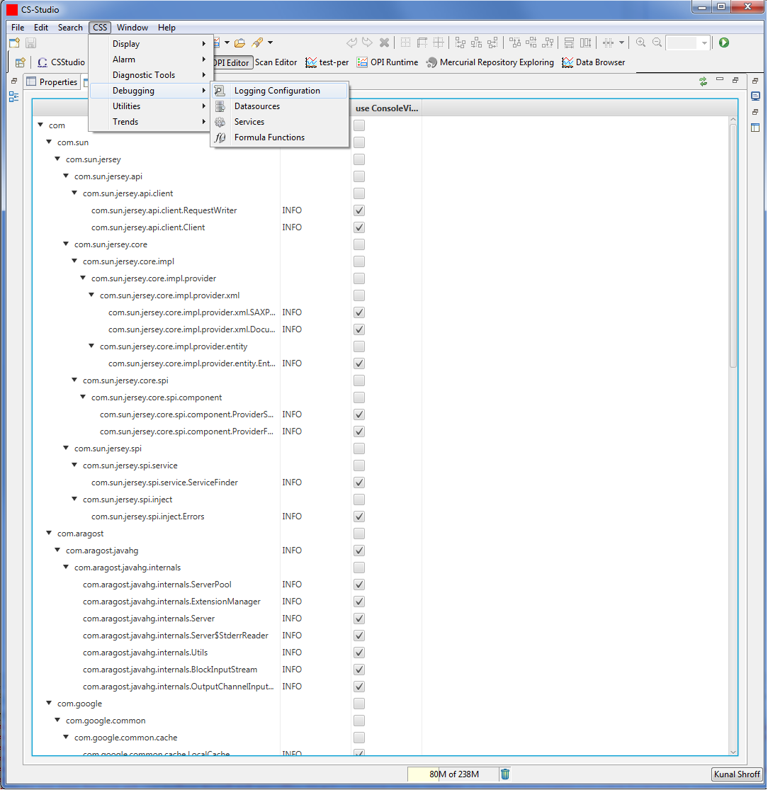

The Logging configuration view allows users to dynamically modifying the logger level and to also enable/disable the default consoleHandler.
Launch : CS-Studio --> Debugging --> Logging Configuration
Fig. 1: Shows a tree view of all the loggers current available